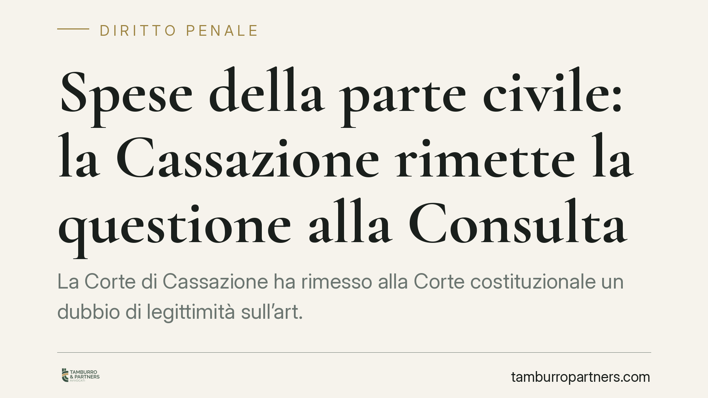

Spese della parte civile: la Cassazione rimette la questione alla Consulta
La Corte di Cassazione ha rimesso alla Corte costituzionale un dubbio di legittimità sull'art. 541 c.p.p.: la condanna alle spese in favore della parte civile, a differenza delle sentenze civili, non è provvisoriamente esecutiva. Un tema che tocca chi si costituisce parte civile, l'imputato e il responsabile civile. La decisione finale spetta ora alla Consulta.

Il fatto
Con una recente ordinanza interlocutoria, la Corte di Cassazione ha sollevato una questione di legittimità costituzionale sull'art. 541, comma 1, c.p.p. Il punto riguarda la sorte delle spese processuali liquidate in favore della parte civile all'esito del processo penale.
È bene chiarire subito la natura del provvedimento: si tratta di un'ordinanza interlocutoria, cioè di un atto con cui la Corte non decide la controversia nel merito, ma sospende il giudizio e trasmette gli atti alla Corte costituzionale perché si pronunci su una norma sospettata di contrasto con la Costituzione. La Cassazione, quindi, non ha stabilito nulla di definitivo: ha posto un problema.
Inquadramento normativo
L'art. 541 c.p.p. disciplina la condanna dell'imputato (e, se presente, del responsabile civile) al rimborso delle spese sostenute dalla parte civile. La disposizione, però, non attribuisce a questa condanna la provvisoria esecutività: la parte civile, in sostanza, non può agire per recuperare le spese finché la decisione non è passata in giudicato o non è comunque definitiva.
Il termine di paragone è l'art. 282 c.p.c., che invece stabilisce come regola generale la provvisoria esecutività della sentenza di primo grado. In ambito civile, dunque, chi ottiene una condanna può attivarsi subito, pur nel rischio di una riforma in appello. In ambito penale, per la parte civile, questo non accade.
Da qui il sospetto di illegittimità, ancorato in particolare agli artt. 3 e 24 Cost.: il principio di uguaglianza, per la disparità di trattamento tra chi ottiene una condanna alle spese in sede civile e chi la ottiene in sede penale; e il diritto di difesa, inteso anche come effettività della tutela riconosciuta a chi si costituisce parte civile.
Implicazioni pratiche
La questione ha ricadute concrete diverse a seconda della posizione processuale.
Per la parte civile, oggi vale la regola vigente: la liquidazione delle spese ottenuta con la sentenza penale non consente un'esecuzione immediata prima della definitività. Un eventuale accoglimento della questione da parte della Consulta potrebbe modificare questo assetto, ma finché ciò non avviene la disciplina resta invariata.
Per l'imputato e per il responsabile civile, la pendenza del giudizio costituzionale segnala un possibile mutamento del quadro: in prospettiva, la condanna alle spese potrebbe diventare azionabile prima del passaggio in giudicato, con conseguenze sulla gestione dei tempi e delle risorse.
È essenziale evitare aspettative rigide. L'esito del giudizio davanti alla Consulta è aperto: la questione può essere dichiarata inammissibile, infondata o fondata, con effetti differenti. Anche i tempi sono incerti e non prevedibili con precisione.
Cosa fare in concreto
- Parte civile: verificare, caso per caso, se convenga attendere la definitività della decisione o percorrere le vie civili ordinarie già disponibili per il recupero del credito da spese.
- Imputato e responsabile civile: monitorare l'evoluzione del giudizio costituzionale, poiché un accoglimento potrebbe anticipare il momento in cui la condanna alle spese diventa azionabile.
- In ogni posizione: è opportuno valutare per tempo la sostenibilità economica di una condanna alle spese e le possibili opzioni di impugnazione, alla luce del quadro normativo vigente e non ancora modificato.
- Sul piano informativo: conservare copia degli atti liquidatori delle spese e annotare gli estremi delle decisioni, utili in caso di successivo mutamento della disciplina.
Uno sguardo d'insieme
La vicenda tocca un nodo spesso trascurato: la parte civile, pur formalmente vittoriosa, può trovarsi in una posizione più debole rispetto a chi agisce in sede civile quando si tratta di ottenere concretamente il rimborso delle spese. La Cassazione ha ritenuto il tema non manifestamente infondato e ha scelto di investirne la Corte costituzionale.
Fino alla pronuncia della Consulta, però, la norma resta pienamente in vigore e va applicata nel suo tenore attuale. Ogni valutazione operativa deve muovere da questo dato, con la consapevolezza che il quadro potrebbe cambiare.
Disclaimer
Contributo informativo a cura di Tamburro & Partners Avvocati - Avv. Giuseppe Tamburro. Non costituisce parere legale.
Ogni condominio ha una storia a sé.
Se gestisci un'amministrazione e vuoi un confronto su una specifica questione condominiale, scrivi allo studio. Ti rispondiamo entro un giorno lavorativo.